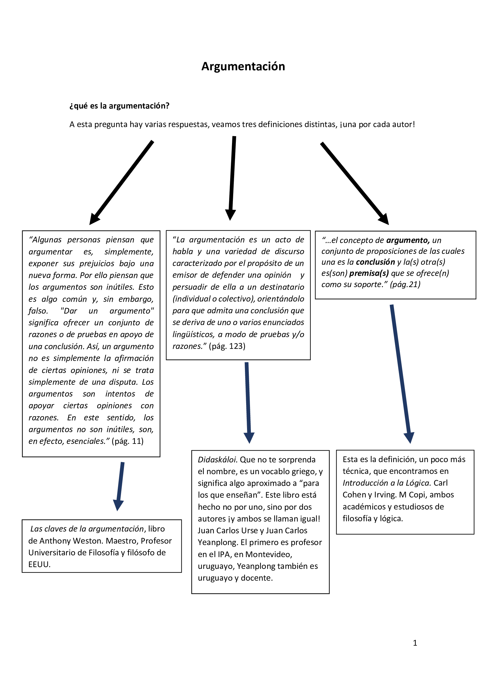
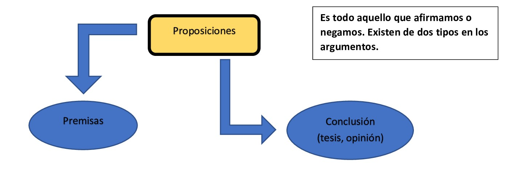

Bien, tenemos entonces más o menos claro lo que es eso llamado “argumentación” ¿qué podemos sacar en claro de todo lo dicho?
Intentando armar una propia definición, podemos decir que la argumentación es una acción discursiva, a través de la cual intentamos dar pruebas de apoyo (argumentos, razones, evidencia) a nuestras opiniones, llamada conclusión. La argumentación se caracteriza tanto por defender la opinión, así como intentar persuadir a quien va destinada de que la acepte, o al menos, no le tenga tanto rechazo (vamos, a veces no intentamos que el otro se convenza del todo, solo acercarlo un poco más a lo que pensamos, que no nos vea en una posición tan alejada; o en ocasiones intentamos convencer poco a poco al otro).
Ya vamos viendo que toda argumentación, tiene una estructura, con sus elementos, que son los siguientes:
Aquello que defendemos, lo que afirmamos o negamos, lo que nos interesa apoyar o sostener. Se le llama conclusión. Premisas, son las pruebas de apoyo a la conclusión, también son afirmaciones o negaciones. Entonces, tenemos que:

Ejemplos:
Quedándote en casa evitas el contacto con la gente, por tanto, no agarrás el “viru viru”
Ambas son proposiciones, porque afirman y niegan algo, la primera, de color Rojo, afirma que “quedándote en casa evitas el contacto con la gente”, y la segunda azul, afirma que “no agarrás el “viru viru””, esto es una negación, niega que, evitando contacto con gente, uno agarre el Covid-19. Ahora vemos que existe una relación entre ellas, y es esta relación, justamente, lo que estudia la lógica, y lo que nos compete a nosotros someramente.
La conclusión es la que está en azul, que se deriva de la premisa roja, como se aprecia, la premisa es la roja, sirve de base o prueba de apoyo para poder concluir lo otro, la azul. Este es el esquema básico ya expuesto, es el que sí o sí tiene todo argumento.
(desde nuestro grupo personalmente sugerimos tomar una Velho Barreiro para combatir el virus)
Algunos otros ejemplos:
Si estudias duro, te podrás sacar una excelente clasificación.
El consumo excesivo de tabaco es perjudicial para la salud, por tanto, conviene evitar el cigarrillo.
En los anteriores ejemplos siempre va la premisa y luego la conclusión, pero ¿es siempre así? Claro que no. Puede ir perfectamente al revés, incluso, en malos escritores, encontrarán conclusiones y premisas mezcladas.
No le faltes el respeto a tus padres, porque eso es malo, y tú no quieres hacer nada malo, ¿no?
En esta la tesis, o conclusión, es no faltarles el respeto a los padres, luego están las premisas.
La referencia de rojo es para las premisas, azul, las conclusiones.
¿todo es una proposición? Por supuesto que no. Las exclamaciones, las preguntas y las órdenes no son proposiciones, porque no afirman o niegan anda, sería extraño pensar en que un “ayayay que dolor” sería verdadero o falso, simplemente, es una expresión. Lo mismo pasa con una orden: ¡andá a bañarte ahora mismo! Tampoco es verdadera o falsa solo es una orden, de alguna madre furiosa jaja. Y con respecto a las preguntas, bueno, está claro que las preguntas, salvo las retóricas, que, si tienen intención comunicativa de afirmar algo, pero que literalmente no, ninguna afirma nada. Entiendan pregunta sacando a las retóricas, que están en el limbo entre pregunta y afirmación.